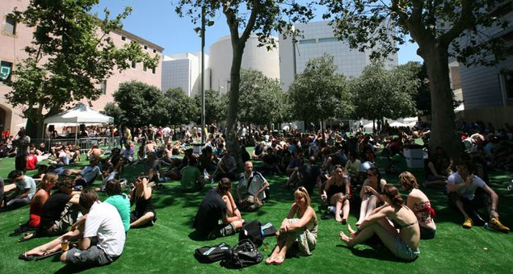

Sónar Festival will stream live from Barcelona


The Catalonian capital will explode into a frenzy of electronic music excellence next week, with the renowned Sónar Festival returning to the Barcelona from Thursday 14th to Saturday 16th June. If you’re not fortunate enough to actually be in Spain next weekend, you’ll still be able to enjoy some of the festival’s biggest moments following the announcement from the organisers that it will be streaming live on YouTube.
The live performances and DJ sets that have been so far confirmed include Richie Hawtin, New Order, Modeselektor, Fatboy Slim, Hot Chip and Azari & III, with many announcements more to come.
Sónar Festival is one of the truly hot tickets on the international dance music calendar, and has been a fixture in the city since 1994; with just as many dance music crazies flocking to Barcelona for the countless ‘Off Sonar’ parties happening over the weekend as they do they do festival itself. The festival’s ‘Sónar by Day’ element taks place in the city centre and puts the focus on new and upcoming talent, while ‘Sónar by Night’ sees punters venturing outside of the city centre for some of the biggest names in electronic music and beyond.
Sonar Festival will land in Barcelona from Thursday 14th to Saturday 16th June, check the festival’s YouTube channel then to catch the live stream.